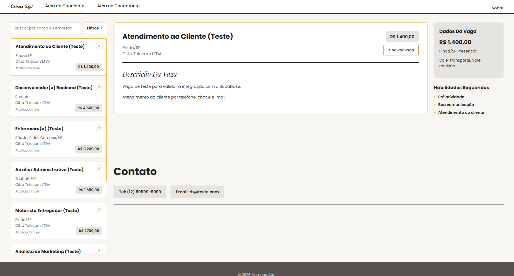
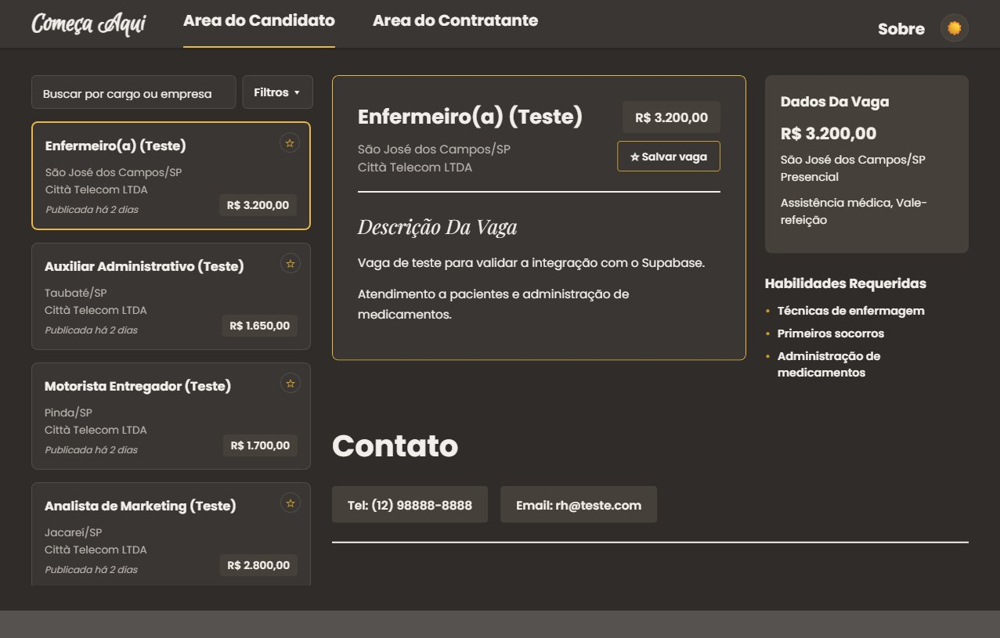
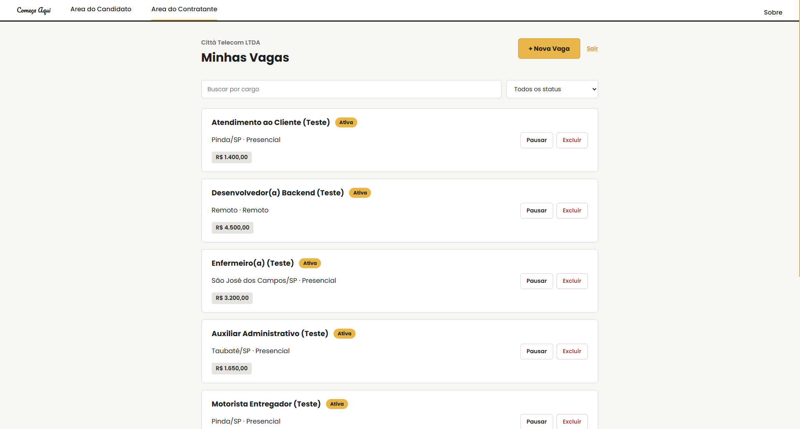
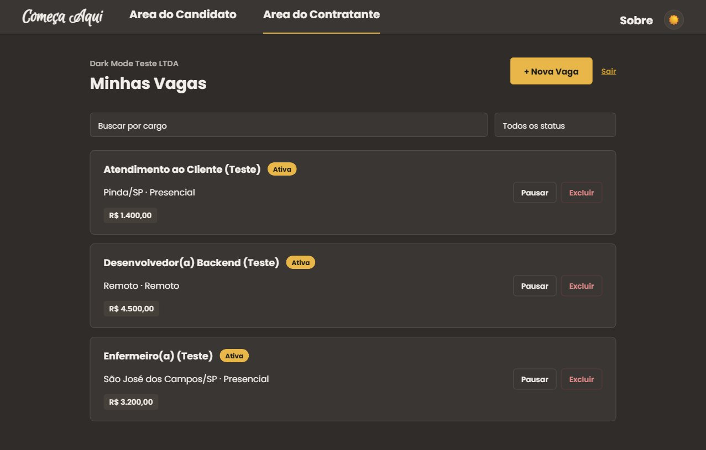

Começa Aqui
Veja vagas reais, com salário, descrição completa e o contato direto do RH — sem cadastros intermináveis ou dezenas de testes para chegar a uma entrevista.
Filtre por cidade, modalidade, nível e tipo de contratação, ordene pelas mais recentes e salve as vagas que mais te interessam para não perder de vista depois.


- Publique sua vaga em poucos minutos
- Fale direto com o candidato, sem intermediários
- Sem taxas por divulgação
- Gerencie todas as suas vagas em um só lugar
- Pause, reative ou exclua vagas quando quiser
- Acompanhe o status de cada vaga publicada


Menos burocracia. Mais oportunidades.
Encontrar um emprego não deveria ser uma jornada interminável de formulários, testes e processos seletivos sem retorno. Em um mercado cada vez mais competitivo, o tempo de quem busca uma oportunidade também importa — e merece ser respeitado.
O Começa Aqui nasceu para simplificar esse caminho. Aproximamos candidatos e recrutadores, priorizamos a transparência e facilitamos o contato direto entre quem procura uma oportunidade e quem deseja contratar. Menos etapas desnecessárias, menos barreiras e mais espaço para o que realmente importa: conectar pessoas a oportunidades reais.
Começa Aqui · Nosso Propósito
Seu próximo passo profissional começa com menos obstáculos.
Corte a dificuldade.
Encontre oportunidades.
Menos burocracia. Mais conexão entre quem procura e quem contrata.
Sobre
O Começa Aqui é uma plataforma de vagas de emprego pensada para encurtar a distância entre quem contrata e quem procura uma oportunidade. Nada de ser redirecionado por dez sites diferentes ou preencher o mesmo teste várias vezes.
Aqui a vaga já vem com o essencial: salário, descrição completa e o contato real de quem está do outro lado — telefone, e-mail ou link direto para a empresa.
Este é um projeto de aprendizagem desenvolvido no Senac.